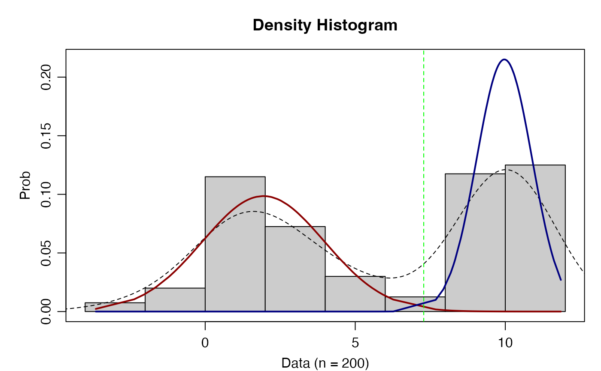
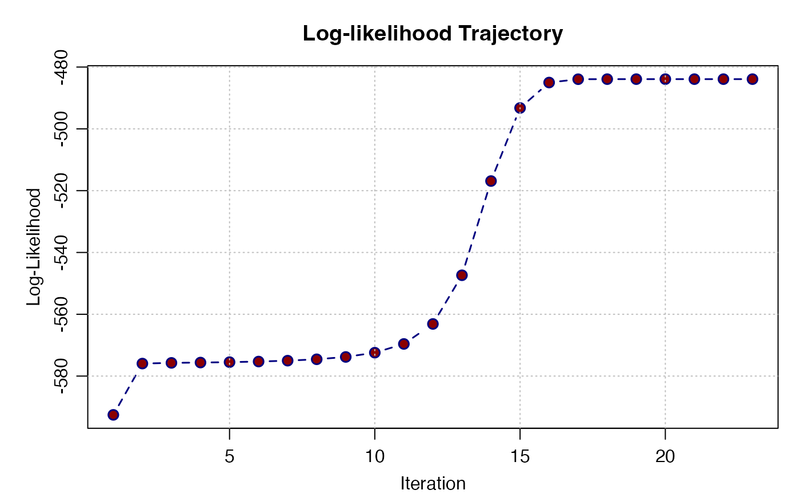
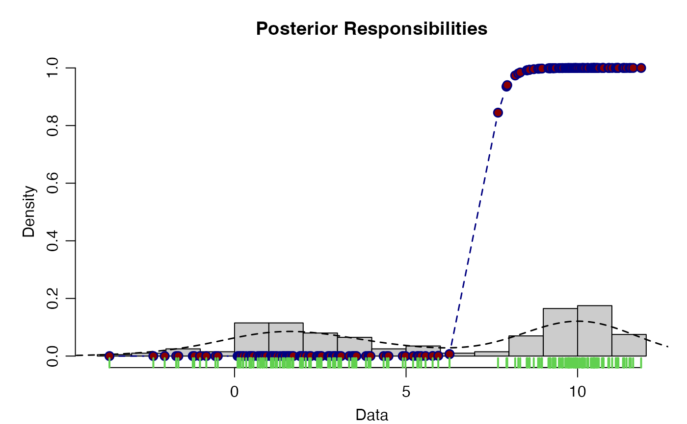

2-distribution (k2) Gaussian Mixture Model
normal_k2_mixture.RdEstimates the parameters of a 2 distribution mixture model via expectation maximization.
S3 plot method for "mix_k2" objects.
Arguments
- data
Numeric vector.
- pars
Initial values for
start.mu,start.sd, andstart.pi.- max.iter
Max number of iterations to perform.
- max.restarts
Max number of restarts ro perform.
- eps
The machine precision for determining when to stop the algorithm.
- x
A
mix_k2object generated fromnormal_k2_mixture.- type
Character. Matched string one of: "density", "likelihood" or "posterior".
- title
Character. Title for the plot.
- ...
Additional parameters for extensibility.
Examples
# Generate 2 gaussian distributions
x <- withr::with_seed(101,
c(rnorm(100, mean = 10, sd = 1), rnorm(100, mean = 2, sd = 2)))
mix_theta <- normal_k2_mixture(x)
#> ✓ Iteration ... 90
mix_theta
#> ══ Mix Type: normal_k2_mixture ═══════════════════════════════════════════
#> • n 200
#> • iter 90
#> • mu [9.97, 1.941]
#> • sigma [0.924, 2.033]
#> • pi_hat 0.502
#> • lambda [0.498, 0.502]
#> • final loglik -483.915
#> ══════════════════════════════════════════════════════════════════════════
plot(mix_theta)

plot(mix_theta, "like")

plot(mix_theta, "post")
